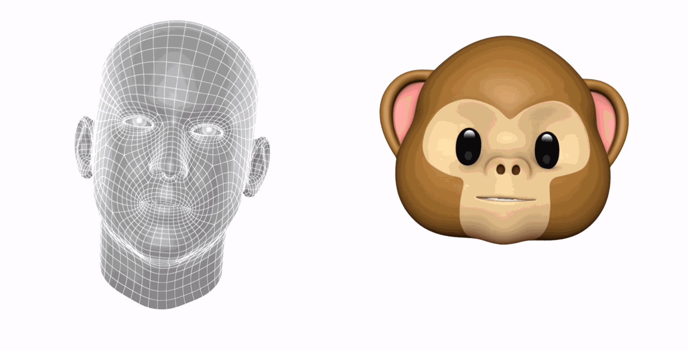

Animoji
A câmera TrueDepth analisa mais de 50 movimentos musculares diferentes para refletir suas expressões nos 12 Animoji. Revele o panda, gato ou robô que existe em você.
Faça todo mundo sorrir
Admita, você sempre quis ser um unicórnio. Agora, com os Animoji, você pode. Trabalhando juntos, a câmera TrueDepth e o chip A11 Bionic capturam e analisam mais de 50 movimentos musculares diferentes e levam suas expressões para esses 12 personagens divertidos. Grave vídeos dos Animoji com sua voz e compartilhe pelo Mensagens.
